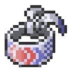
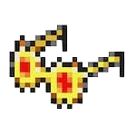
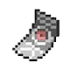

This page lists the most popular or most sought-after Hold Items in Pokémon Unbound, along with their in-game descriptions and how to get them.
Please note that this page does not catalog every single Held Item in the game, because that information is not well documented anywhere. Instead, this page is a work in progress of the majority of held items that most players want to know about. We have also listed all of the location(s) for each that we know of, but there may be some locations that are missing or not accounted for.
Additionally, the locations in the table below primarily focus on repeatable ways to acquire these items. Many of these items can also be found as one-time items in the overworld, but we have not cataloged those locations here. For that you may want to search this wiki, or browse our location pages to look at the list of items found in each location.
| Item | Description | Location(s) |
|---|---|---|
Absorb Bulb |
An item that boosts the Special Attack if hit with a Water-type attack once. |
|
Adrenaline Orb |
An item that boosts the Speed of the holding Pokemon if the holder is intimidated. |
|
Air Balloon |
The Pokemon who holds this item floats in the air until hit once. Once hit, this item will burst. |
|
Amulet Coin |
An item that increases the battle’s prize money if the holding Pokemon joins in. |
|
Assault Vest |
An item that raises the Special Defense but prevents the use of status moves. |
|
Big Root |
An item that boosts the HP recovered from HP-stealing moves the user uses. |
|
Binding Band |
A band that increases the power of binding moves used by the holder. |
|
Black Belt |
A belt that boosts determination and the power of Fighting-type moves. |
|
Black Glasses |
A shady-looking pair of glasses that boosts the power of Dark-type moves. |
|
Black Sludge |
Poison-type Pokemon holding this item regain HP while other types have damage inflicted on them. |
|
 Blunder Policy |
An item that raises Speed when a Pokemon misses a move due to accuracy. |
|
Bright Powder |
An item that casts a tricky glare that lowers the opponent’s accuracy. |
|
Cell Battery |
An item that boosts Attack if hit by an Electric-type attack once. |
|
Charcoal |
A combustible fuel that boosts the power of Fire-type moves. |
|
|  Choice Band |
An item to be held by a Pokemon. It ups Attack but only allows the use of one move. |
|
 Choice Scarf |
An item to be held by a Pokemon. It ups Speed but only allows the use of one move. |
|
|  Choice Specs |
An item to be held by a Pokemon. It ups Special Attack but only allows the use of one move. |
|
Cleanse Tag |
An item that repels wild Pokemon if the holder is first in the party. |
|
Damp Rock |
An item that extends the duration of the move Rain Dance when used by the holder. |
|
Destiny Knot |
If the holder becomes infatuated then the opposing Pokemon will be too. |
|
Dragon Fang |
A hard and sharp fang that boosts the power of Dragon-type moves. | 5% chance wild Bagon, Shelgon, Salamence, or Druddigon will be holding it. |
Eject Button |
An item that makes the holder switch out of battle if hit by an attack. |
|
Eject Pack |
An item that makes the holder switch out of battle if its stats are lowered. |
|
Electric Seed |
An item that boosts Defense on Electric Terrain but can only be used once. |
|
Everstone |
An item that prevents the holding Pokemon from evolving. |
|
Expert Belt |
A well-worn belt that boosts the power of super-effective moves. |
|
Flame Orb |
A bizarre orb that inflicts burn on the holder in battle. |
|
Float Stone |
This item reduces the weight of a Pokemon when held. |
|
Focus Band |
The Pokemon holding this item may endure an attack, leaving just one HP. |
|
Focus Sash |
An item that lets the holder endure a KO attack with 1 HP if the holder has full HP. |
|
 Full Incense |
An item that makes the holder bloated and slow-moving. |
|
Grassy Seed |
An item that boosts Defense on Grassy Terrain but can only be used once. |
|
 Grip Claw |
An item that extends the duration of multi-turn attacks like Bind and Wrap. |
|
Hard Stone |
An unbreakable stone that boosts the power of Rock-type moves. |
|
Heat Rock |
An item that extends the duration of the move Sunny Day when used by the holder. |
|
Heavy-Duty Boots |
Boots that prevent the effects of traps set on the battlefield. |
|
Icy Rock |
An item that extends the duration of the move Hail when used by the holder. |
|
Iron Ball |
An item that cuts speed and allows Ground-type moves to hit Flying and levitating Pokemon. |
|
 King’s Rock |
An item that may cause the foe to flinch upon taking damage. |
|
Lagging Tail |
A tremendously heavy item that makes the holder move slower than usual. | 5% chance wild Slowpoke, Lickitung, Lickilicky, Cufant, or Copperajah will be holding it. |
Lax Incense |
An item that slightly reduces the foe’s accuracy. |
|
Leftovers |
An item that lets the holding Pokemon gradually regain HP during battle. |
|
 Life Orb |
An item that boosts the power of moves at the cost of some HP on each hit. |
|
 Light Ball |
An orb to be held by Pikachu that boosts the attacking stats. |
|
Light Clay |
A hold item that extends the duration of moves like Reflect and Light Screen when used by the holder. |
|
Luck Incense |
An item that increases the battle’s prize money if the holding Pokemon joins in. |
|
Lucky Egg |
An item that lets the holding Pokemon earn extra Experience Points in battle. | 5% chance wild Chansey, Pelipper, or Happiny will be holding it, and a 50% chance for wild Blissey. |
Luminous Moss |
An item that boosts Special Defense if hit with a Water-type attack once. |
|
Macho Brace |
An item that promotes strong growth but lowers speed while it’s held. | Given to you by the Karate Master NPC on Route 10. |
Magnet |
A powerful magnet that boosts the power of Electric-type moves. |
|
Mental Herb |
An item that snaps the user out of infatuation. It can only be used once. |
|
Metal Coat |
A special metallic film that boosts the power of Steel-type moves. |
|
 Metronome |
An item that boosts moves that are used consecutively until a different move is used. | Obtainable from Dehara Game Corner for 1,000 coins. |
Miracle Seed |
A seed imbued with life that boosts the power of Grass-type moves. | 5% chance wild Cherrim, Cherubi, Maractus, Fomantis, or Lurantis will be holding it. 50% chance for Pumpkaboo Xl and Gourgeist Xl. |
Misty Seed |
An item that boosts Defense on Misty Terrain but can only be used once. |
|
Muscle Band |
A headband that slightly boosts the power of physical moves. |
|
Mystic Water |
A teardrop-shaped gem that boosts the power of Water-type moves. | 5% chance Goldeen, Seaking, Dewpider, or Araquanid will be holding it. 50% chance for Lapras and Castform. |
Never-Melt Ice |
A piece of ice that repels heat and boosts the power of Ice-type moves. |
|
Odd Incense |
An item that slightly boosts the power of Psychic-type moves. |
|
 Poison Barb |
A small, poisonous barb that boosts the power of Poison-type moves. |
|
Power Anklet |
An item that cuts the Speed of the holding Pokemon but allows their Speed to grow more. | Obtained after completing the “We Were Meant to Fly” side mission. |
Power Band |
An item that cuts the Speed of the holding Pokemon but allows their Special Defense to grow more. | Reward for completing the “Pyukumuku Chucker” side mission. |
Power Belt |
An item that cuts the Speed of the holding Pokemon but allows their Defense to grow more. | Reward for completing the “Abandonment Issues” side mission. |
Power Bracer |
An item that cuts the Speed of the holding Pokemon but allows their Attack to grow more. | Reward for completing the “A Minor Scrap” side mission. |
Power Herb |
A single-use item that allows a charging move to be used on the first turn. |
|
Power Lens |
An item that cuts the Speed of the holding Pokemon but allows their Special Attack to grow more. | Obtained in the Vivill Warehouse B5F. In the room players fight Aklove. |
Power Weight |
An item that cuts the Speed of the holding Pokemon but allows their Maximum HP to grow more. | Reward for completing “The Rogue Electivire” side mission. |
Protective Pads |
An item that protects the holder from effects caused by making contact with the enemy. |
|
Psychic Seed |
An item that boosts Defense on Psychic Terrain but can only be used once. |
|
Pure Incense |
An item that helps keep wild Pokemon way if the holder is the first in the party. |
|
Quick Claw |
A light and sharp claw. The user may be able to strike first when holding this. | 5% chance wild Meowth, Persian, Sneasel, Zangoose, Weavile, Alolan Meowth, or Alolan Persian will be holding it. |
 Razor Claw |
This sharply hooked claw increases the holder’s critical hit ratio. |
|
 Razor Fang |
This item may cause the foe to flinch if the holder inflicts damage. |
|
Red Card |
If the holder is hit by an attack then the attacker is removed from battle. | Purchasable from the Battle Tower’s middle counter for 32 BP. |
 Ring Target |
Moves that normally have no effect will land on a Pokemon holding this item. |
|
 Rock Incense |
An item that slightly boosts the power of Rock-type moves. |
|
Rocky Helmet |
If the Pokemon holding this item is hit, the attacker will also be damaged upon contact. |
|
Room Service |
An item that lowers the holder’s speed when Trick Room takes effect. | Purchasable from the Battle Tower’s middle counter for 24 BP. |
Rose Incense |
An item that slightly boosts the power of Grass-type moves. |
|
Scope Lens |
A lens that boosts the critical-hit ratio of the holding Pokemon. |
|
Sea Incense |
An item that slightly boosts the power of Water-type moves. | Bought from the Dehara Department Store 6F in post-game. |
Sharp Beak |
A long, sharp beak that boosts the power of Flying-type moves. |
|
Shed Shell |
This carapace enabled the holder to switch out of battle without fail. |
|
Shell Bell |
An item that lets the holding Pokemon regain some health when striking the foe. | Obtained by trading sea salts and sea shells with the NPC in the Seaport City Warehouse. |
 Silk Scarf |
A sumptuous scarf that boosts the power of Normal-type moves. |
|
Silver Powder |
A shiny silver powder that boosts the power of Bug-type moves. | 5% chance wild Butterfree, Masquerain, Wormadam, Mothim, Wormadam Sandy, or Wormadam Trash will be holding it. 5% chance for Volcarona. |
Smoke Ball |
A held item that lets the holding Pokemon flee from any wild Pokemon for sure. | 5% chance wild Koffing, Weezing, Salandit, Salazzle, or Galarian Koffing will hold it. 50% for Spiritomb. |
Smooth Rock |
An item that extends the duration of the move Sandstorm when used by the holder. |
|
Snowball |
An item that boosts Attack if hit by an Ice-type attack once. |
|
Soft Sand |
A loose, silky sand that boosts the power of Ground-type moves. |
|
Soothe Bell |
A bell with a comforting chime. Makes the holder calm and friendly. |
|
|  Spell Tag |
A sinister and eerie tag that boosts the power of Ghost-type moves. | 5% chance wild Haunter, Gengar, Misdreavus, Duskull, Dusclops, Shuppet, Banette, Dusknoir, Yamask, Cofagrigus, or Sandygast, Palossand will be holding it. |
Sticky Barb |
A held item that damaged the holder every turn and latches on to any Pokemon that touch it. | 5% chance wild Cacnea, Cacturne, Ferroseed, or Ferrothorn will be holding it. |
Terrain Extender |
An item that extends the terrain duration of the holder’s move or ability. |
|
Toxic Orb |
A bizarre orb that badly poisons the holder in battle. |
|
Twisted Spoon |
A spoon imbued with telekinetic energy that boosts the power of Psychic-type moves. |
|
Utility Parasol |
A sturdy umbrella that protects the holder from sun, rain, and fog. |
|
Wave Incense |
An item that slightly boosts the power of Water-type moves. |
|
 Weakness Policy |
The Attack and Special Attack of the Pokemon holding this item increases if hit by a super effective move. |
|
White Herb |
A held item that restores any lowered stat in battle. It can only be used once. |
|
Wide Lens |
A magnifying lens that boosts the accuracy of moves for the Pokemon holding it. |
|
Wise Glasses |
A thick pair of glasses that slightly boosts the power of special moves. |
|
Zoom Lens |
If the holder moves after the foe then its accuracy will be boosted. |
|